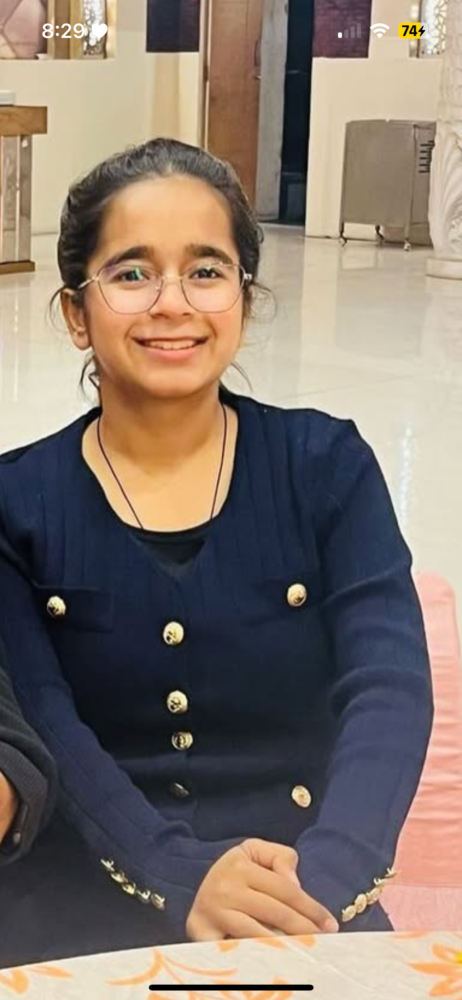

Sonam Narula — Online Resume

Summary
Dedicated and disciplined student from Jaipur, currently preparing for SSC CGL while
simultaneously building strong skills in full-stack web development and DSA (C++).
Known for consistency (200+ day coding streak), adaptability, and an unshakable drive
toward financial independence. Passionate about learning, growth, and creating a better
future by securing an on-site internship in Bangalore or Hyderabad.
Personal Details
Education
- B.Tech (CSE) — JECRC University, Jaipur (2023–2027)
- Senior Secondary — Jaipur (2023)
- Secondary — Jaipur (2021)
Experience
-
Student Placement Coordinator (SPC) — Intern (Shortlisted)
JECRC University
Responsibilities:
- Coordinated student placement activities
- Handled LinkedIn-based communication tasks
- Assisted with organising training and placement sessions
Skills
- HTML, CSS, JavaScript (Web Development)
- Learning Full-Stack (Dr. Angela Yu Course)
- DSA in C++ (Completed Basics & Intermediate)
- Python Basics
- Strong English + Hindi communication
- Consistency and self-discipline
- SSC CGL: Maths & English Preparation
- Time-management & multitasking
Awards & Achievements
- Maintaining 200+ days GeeksforGeeks & LeetCode streak
- Completed DSA basics and patterns in C++
- Cleared multiple internal exams with high scores (36/40, 39/40 etc.)
- Successfully balancing college, SSC prep & Web Dev
More About Me